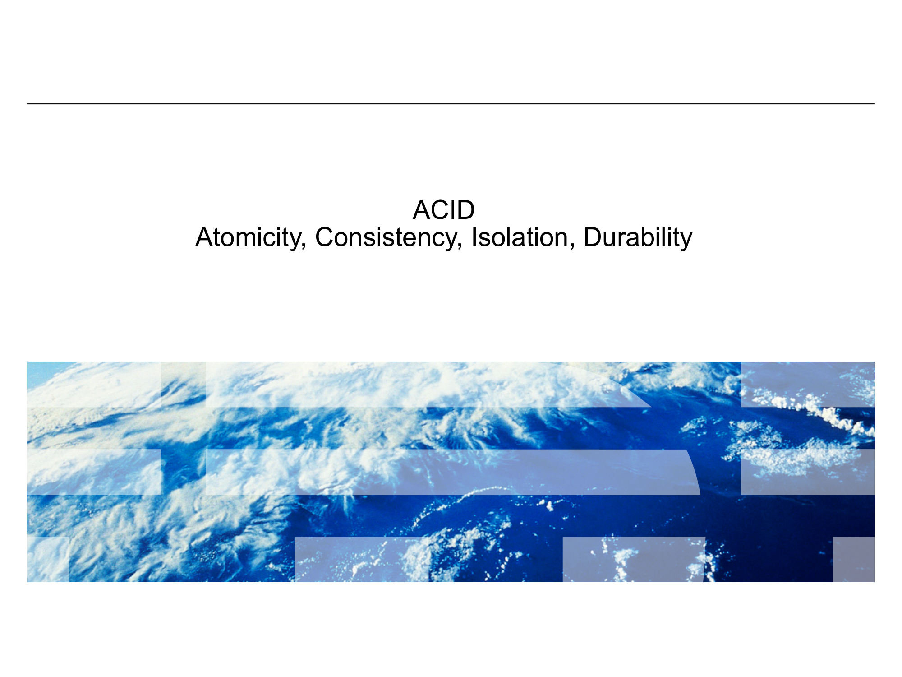

Transactions, ACID, and Write-Ahead Logging
How databases guarantee your data survives crashes and stays consistent
1. OLTP vs. OLAP — Two Worlds of Databases
Not all database workloads are created equal. The way a bank processes ATM withdrawals is fundamentally different from the way an analyst crunches last quarter's sales numbers. These two patterns of use are so distinct that the industry gave them their own names, and modern systems are often optimized for one or the other.
OLTP — Online Transaction Processing
What it does: Handles many short, fast transactions from many concurrent users, all happening at the same time.
Pattern: Read/write a small amount of data per transaction. Low latency is critical — users are waiting.
Real-world examples:
- ATM cash withdrawals
- Uber ride requests
- Visa card swipes (65,000 transactions per second!)
- Adding items to an online shopping cart
OLAP — Online Analytical Processing
What it does: Handles complex analytical queries over large datasets, usually for reporting and decision-making.
Pattern: Mostly reads. Scans large amounts of data. Batch processing is common — nobody is staring at a loading spinner.
Real-world examples:
- "What were total sales by region last quarter?"
- "Which products have declining margins?"
- Training a recommendation model on user behavior
| Dimension | OLTP | OLAP |
|---|---|---|
| Operations | Read + Write | Mostly Read |
| Data per query | Small (a few rows) | Large (millions of rows) |
| Latency | Milliseconds (users waiting) | Seconds to minutes (batch jobs) |
| Concurrency | Thousands of users at once | Handful of analysts |
| Priority | Correctness & speed | Throughput & insight |

2. What Is a Transaction?
In SQL, a transaction looks like this:
Transaction Syntax in SQL
START TRANSACTION;
UPDATE accounts SET balance = balance * 1.06 WHERE id = 1;
UPDATE accounts SET balance = balance * 1.06 WHERE id = 2;
...
COMMIT; — make all changes permanent
(or ROLLBACK; — discard all changes)

A Concrete Example: Monthly Bank Interest
Imagine a bank needs to apply 6% annual interest to every savings account at the end of the month. The transaction looks like:
Fetch the current balance for each account.
Compute the new balance: new_balance = old_balance * 1.06
Write the new balance back to each of the 1,000 accounts.
The bank must update ALL accounts or NONE. A partial update — where some customers get interest and others do not — would be unfair, incorrect, and possibly illegal.
The Crash Problem
What happens if the system crashes in the middle of Step 3, after updating 500 of the 1,000 accounts?
- 500 customers got their 6% interest — their balances are updated.
- 500 customers did not get interest — their balances are unchanged.
This is unacceptable. The database is now in an inconsistent state. Some customers are happy, others are shortchanged, and the bank's books don't add up.

This crash scenario is exactly the problem that motivates the need for ACID guarantees. We need a mechanism that ensures: if a crash happens mid-transaction, the database can recover to a consistent state automatically.
3. The ACID Properties
ACID is a set of four properties that database transactions must satisfy to guarantee reliability, even in the face of crashes, errors, and concurrent access. Every serious OLTP database implements these guarantees (though the specifics vary).

A — Atomicity
All or nothing. Either every operation in the transaction completes successfully, or none of them take effect. If any part fails, the entire transaction is rolled back.
Enforced by: Write-Ahead Logging (WAL)
C — Consistency
Valid state to valid state. The database starts in a consistent state and ends in a consistent state. All constraints, foreign keys, and invariants are satisfied before and after.
Enforced by: Application logic + locking protocols
I — Isolation
No interference. Concurrent transactions don't see each other's intermediate states. Each transaction executes as if it were the only one running.
Enforced by: Serializability, 2-Phase Locking
D — Durability
Permanent once committed. Once a transaction commits, its effects survive permanently — even if the system crashes one millisecond after the commit.
Enforced by: Write-Ahead Logging (WAL)
Notice something?
Two of the four ACID properties — Atomicity and Durability — are both enforced by the same mechanism: Write-Ahead Logging. This is not a coincidence. WAL is the workhorse that makes crash recovery possible, and we will spend the rest of this lecture understanding exactly how it works.
A Word of Caution: ACID Is Contentious
Not everyone in the database world agrees on the precise definitions of these properties. Different databases offer different levels of each guarantee. For example, many systems offer weaker forms of Isolation for performance reasons (like "Read Committed" instead of full "Serializability"). The textbook definitions are a starting point, but real systems involve tradeoffs.

4. Physical Logging — The Basic Idea
Before we can understand WAL, we need to understand the building block it relies on: physical logging. The core idea is simple but powerful.
Each log record captures enough information to both undo and redo the change. The format looks like this:
Log Record Format
[TransactionID, PageID, Offset, OldValue, NewValue]
- TransactionID: Which transaction made this change
- PageID: Which data page was modified
- Offset: Where on that page the change happened
- OldValue: What was there before (needed for UNDO)
- NewValue: What we're changing it to (needed for REDO)

The log is append-only — new records are always added at the end, never inserted in the middle or overwritten. This means the log is written sequentially, which (as we will see) is dramatically faster than random writes.
Two Key Operations: UNDO and REDO
With the log in hand, the database can perform two critical operations during crash recovery:
UNDO — Roll Back
Reverse an uncommitted transaction's changes by restoring the OldValue for each of its log records.
When used: The transaction was in progress when the crash happened. It never committed, so its partial changes must be erased.
REDO — Replay Forward
Reapply a committed transaction's changes by writing the NewValue for each of its log records.
When used: The transaction committed, but some of its changes may not have made it to the actual data pages on disk before the crash.
5. Write-Ahead Logging (WAL) — The Protocol
We now know what log records look like and what UNDO/REDO do. But the crucial question remains: when do we actually flush these log records to disk? The ordering matters enormously. Get it wrong, and the database cannot recover from crashes.
The Two Rules of the WAL Commit Protocol
Before a transaction's COMMIT record is acknowledged to the user, ALL of that transaction's log records must be flushed to stable storage (disk).
Why? If we tell the user "your transaction committed" but the log records haven't been written to disk yet, a crash would lose those records. We would have no way to REDO the committed changes. The user was told their data was saved, but it's gone. That violates Durability.
Before a dirty data page is written to disk, ALL log records for changes on that page must be flushed to stable storage first.
Why? If a modified data page gets written to disk but the corresponding log records have not, a crash would leave modified data on disk with no log to undo it. We can't roll back the incomplete transaction. That violates Atomicity.

Why This Ordering? Two Incorrect Alternatives
To truly understand why WAL works, it helps to see what goes wrong when you do it differently. There are two tempting but incorrect protocols:
Incorrect Protocol #1: Write data pages first, then log
Suppose we write the modified data pages to disk first, and plan to write the log records afterward.
Crash scenario: The system writes the data pages to disk, then crashes before the log records are written.
Result: The data on disk has been modified by an uncommitted transaction, but there is no log record to undo the changes. The database is stuck with partial, incorrect modifications and no way to fix them. Atomicity is violated.
Incorrect Protocol #2: Write commit record before all log records
Suppose we write the COMMIT record to disk early, before all of the transaction's log records have been flushed.
Crash scenario: The COMMIT record is on disk, but the system crashes before all the corresponding change records are written.
Result: During recovery, we see the COMMIT record and know the transaction should be redone. But some log records are missing, so we can't fully redo all the changes. The transaction is partially applied. Durability is violated.

The WAL ordering is the only correct option
Both incorrect protocols fail because they break the fundamental invariant: the log must always be ahead of the data, and the log must be complete before the commit is acknowledged. WAL is not arbitrary — it is the unique protocol that guarantees both atomicity and durability.
Walking Through the Bank Interest Example with WAL
Let us return to our bank interest problem and trace through exactly how WAL handles it, both during normal execution and after a crash.
Normal Execution (No Crash)
Write [T1, BEGIN] to the log (in memory).
For account #1: write [T1, Page5, Offset12, $1000, $1060] to the log.
For account #2: write [T1, Page5, Offset48, $2000, $2120] to the log.
... and so on for all 1,000 accounts. The actual data pages are modified in memory (buffer pool) but not yet written to disk.
All 1,000+ log records are written to stable storage. This is a sequential write to the append-only log file — fast.
Write [T1, COMMIT] to the log and flush it to disk. At this point, Rule 1 is satisfied.
Tell the application: "Transaction committed successfully." The user sees confirmation.
At some point in the future, the buffer pool manager writes the modified data pages to disk. This can happen lazily — there is no rush, because the log already has everything needed for recovery.

Crash Recovery
Now suppose the system crashes at some point during execution. When the database restarts, it reads the log and makes a simple decision:
COMMIT record found in log?
YES → REDO
The transaction committed. Replay all its changes using the NewValues from the log. This guarantees Durability: the committed work is restored.
No COMMIT record in log?
NO → UNDO
The transaction never committed. Reverse all its changes using the OldValues from the log. This guarantees Atomicity: the partial work is erased.

Returning to Our Bank Crash Scenario
Remember: 1,000 accounts, crash after updating 500. With WAL:
- If no COMMIT record is in the log → UNDO all 500 changes. All accounts go back to their original balances. Nobody gets interest. The bank re-runs the transaction later. Fair.
- If the COMMIT record IS in the log → REDO all 1,000 changes. Even if only 500 were written to data pages, the log has all the NewValues. Every account gets interest. Fair.
Either way, the database ends up in a consistent state. The "500 got interest, 500 didn't" nightmare cannot happen with WAL.
6. Why Sequential Writes Matter
You might be thinking: "Writing all these log records sounds expensive. Isn't it a lot of overhead to write to the log before every data modification?" The answer is no, and the reason comes down to the physics of storage devices.
Random Writes
Writing data pages to various locations scattered across the disk. The disk head must physically seek to each location.
Performance: Writing 1 million pages randomly takes approximately ~100,000 seconds (over a day).
Sequential Writes
Writing data to consecutive locations on the disk. The disk head moves smoothly in one direction. No seeking.
Performance: Writing 1 million pages sequentially takes approximately ~1 second.
That is a difference of roughly five orders of magnitude — 100,000x faster. Sequential writes are not just "a bit faster." They are in a completely different performance universe.

This insight also explains a broader design principle in database systems: whenever possible, convert random writes into sequential writes. The WAL does exactly this — instead of immediately writing modified data pages to their scattered locations on disk (random writes), the database first records the changes sequentially in the log, and defers the actual data page writes to a more convenient time.
Summary — Key Takeaways
- ✓ OLTP handles short, fast transactions from many concurrent users (ATM withdrawals, card swipes, ride requests), while OLAP handles complex analytical queries over large datasets.
- ✓ Transactions are all-or-nothing — a sequence of operations that either all succeed or all fail. Partial execution is never acceptable.
- ✓ ACID guarantees — Atomicity (all or nothing), Consistency (valid state to valid state), Isolation (no interference between concurrent transactions), and Durability (committed = permanent).
- ✓ WAL provides both Atomicity and Durability through physical logging. Log records store OldValue (for UNDO) and NewValue (for REDO).
- ✓ The two WAL rules ensure correct ordering: (1) all log records flushed before COMMIT is acknowledged, and (2) all log records for a page flushed before that page is written to disk.
- ✓ Sequential writes make WAL fast — the append-only log leverages sequential I/O, which is ~100,000x faster than random I/O. The safety of crash recovery comes at negligible performance cost.